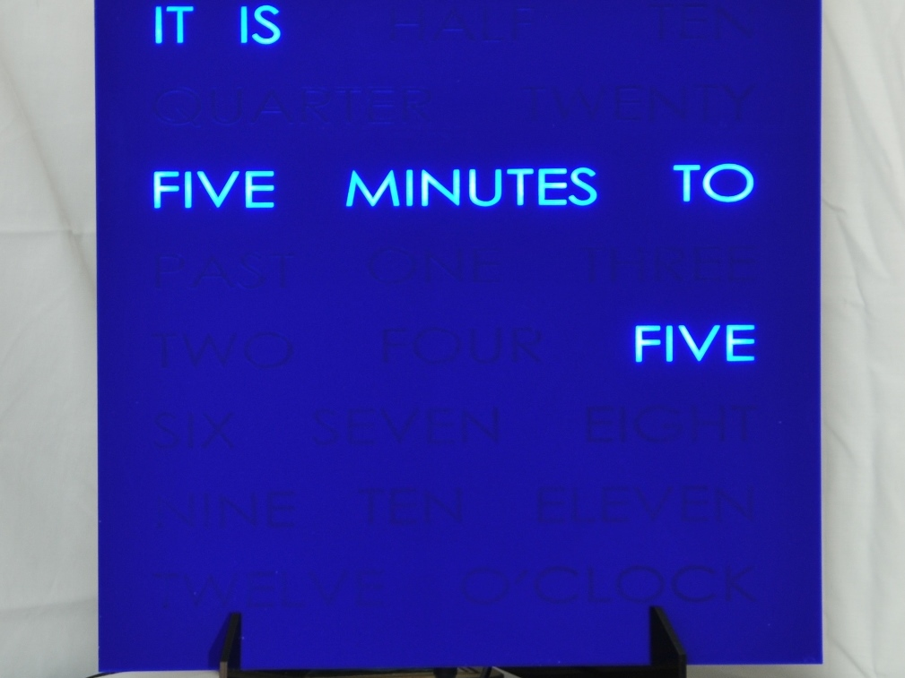
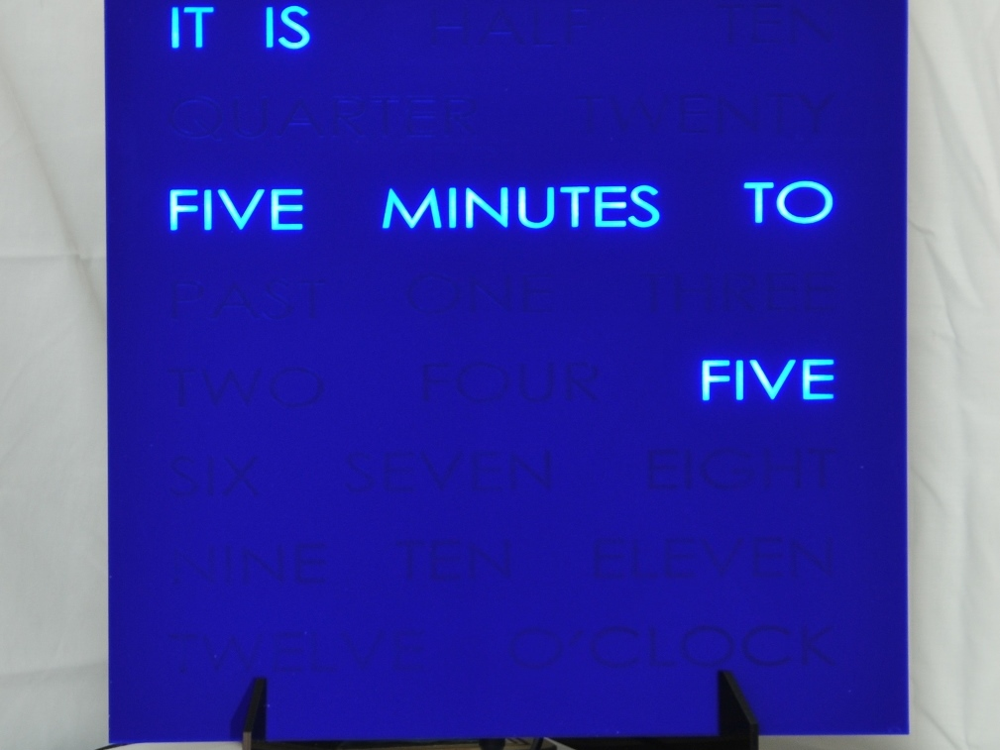

Alarm Clock Project
 

This project is a fantastic starting point for any invention which relies on an accurate date and hour, for example controlling a clock display, or triggering events such as alarms by time of day, day of the week or day of the month.
Microcomputers usually need an extra chip to provide an accurate clock, and this build demonstrates how to wire up a DS1307 Real Time Clock chip with a coin battery to keep the time.
Example Shrimp behaviours are documented which set and read the accurate time, and which periodically check the time whilst using the lowest possible power, allowing a time-driven invention to be deployed on battery for a long time.